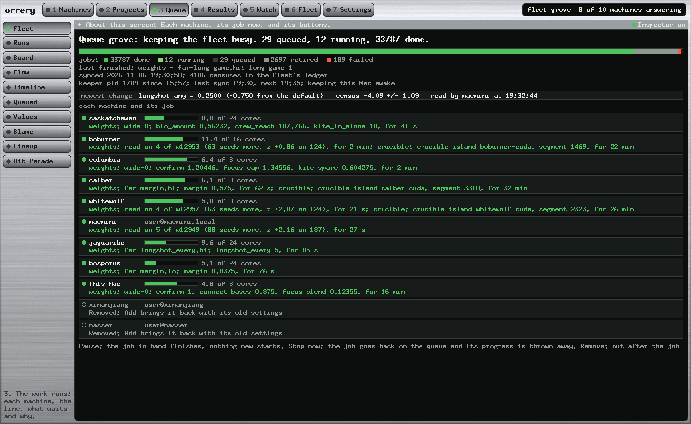
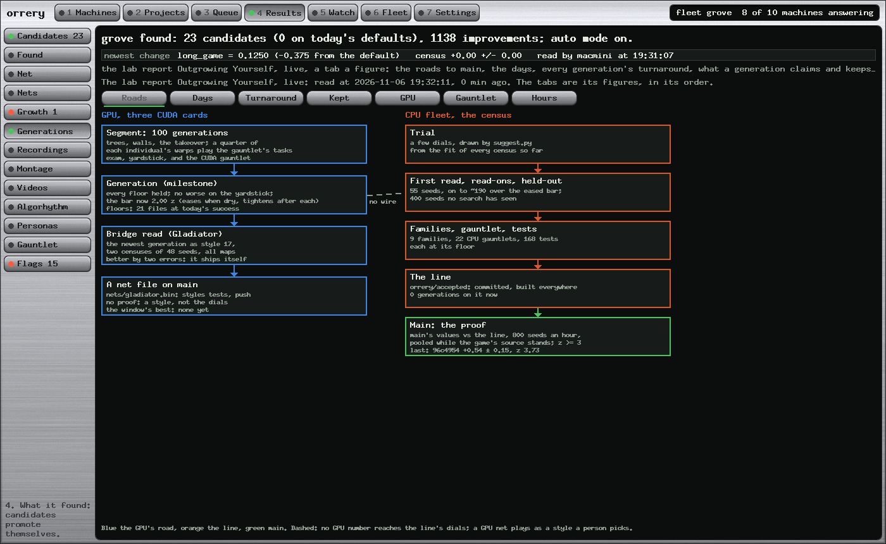
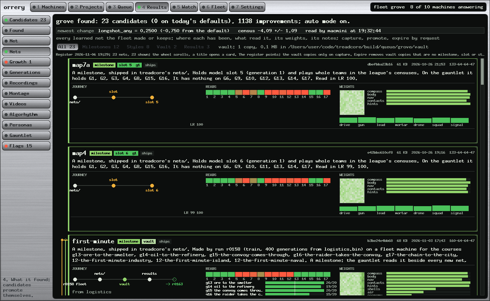
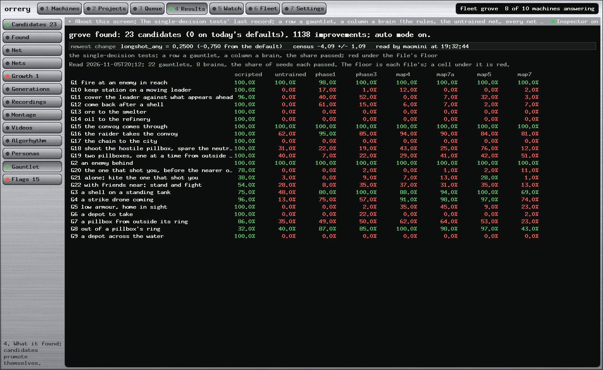
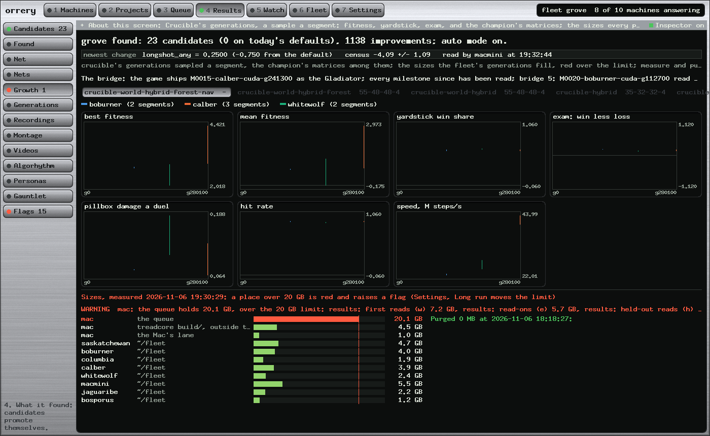
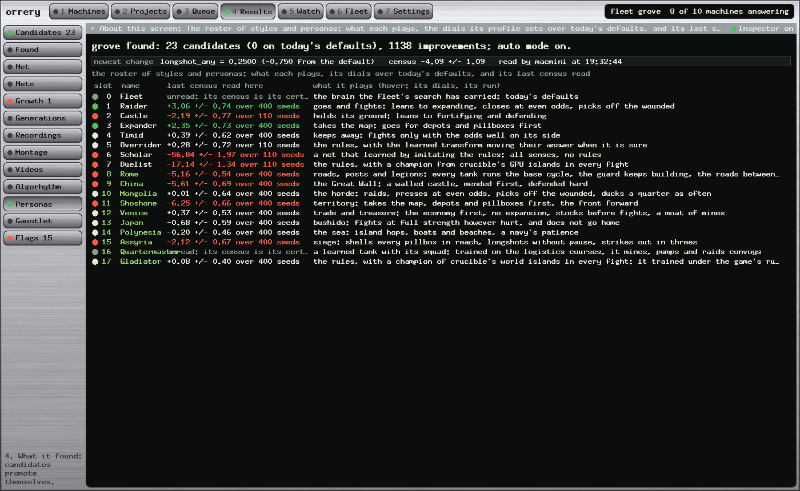
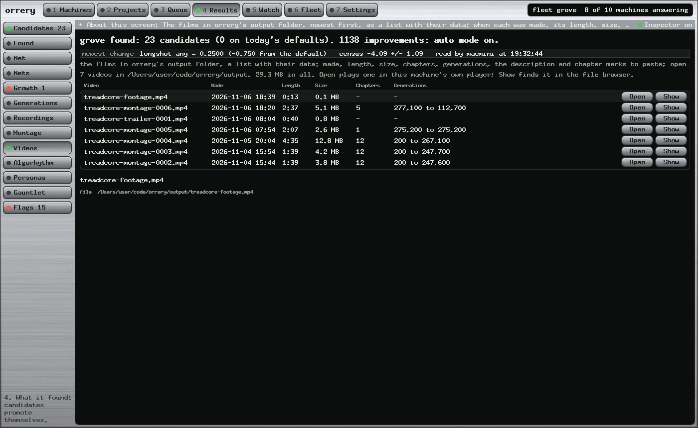

QueuedWhat runs and waits, each saying why it is there.

ValuesThe numbers that set how hard a generation is.


FleetEach machine and its job, with the buttons.

MachinesProbe, recipes, join: a fresh node from the console.

Projectstreadcore and crucible, and which machine runs which.


GenerationsThe two roads to main, live, a box a stage.


NetsEvery learned net: its journey, its reads, its weights.


GauntletA row a test, a column a brain, red under the floor.


GrowthThe islands as they grow, and the disks they fill.


PersonasThe styles the census plays, the Gladiator among them.


VideosThe films the fleet made, with their data.

CandidatesTrials past both held-out reads.

MatricesA champion's layers, a cell a weight.

KeeperIs it running as it should: every check, a line each.

CommitsThe line the fleet builds, and the defaults each moved.

CommandersThe fleet as agents, with a chat.

StorageThe disks, the shares, and what lives where.

The montageThe generations as a film, and every other screen.
| Measure | Value | Note |
|---|---|---|
| CPU lanes busy | 98.0% | nine lanes, a job in hand 98 minutes in every hundred; 97.8% over the last 12 h |
| GPU lanes busy | 97.5% | three cards, crucible's islands; 95.3% over 12 h, after fifteen queued segments were stopped and planned again for the maze home |
| Jobs | 4,569 | 1,543 first reads, 1,820 read-ons, 304 held-out reads, 444 run steps, 300 GPU segments, 158 others |
| Generations, last 7 days | 28 | commits on the line, a median 2.2 hours apart; the newest, w12958, at 20:05 tonight |
| The search's funnel | 1,543 → 2 | 658 trials read on, 79 held out, 2 generations |
| Jobs run again since the handover | 0 | on 5 November: the keeper keeps its jobs across its own restart |
| A transform step, end to end | 2.3 min | on 5 November, was 7.6: the keeper asks the planner when a chain's step returns, and a pass takes 43 s, was 105 |
5 November 2026 · the fleet
The Duty CycleNinety-eight percent busy: where the fleet's waiting goes, a round table to see it, four changes with their estimates, and a background job that asks for nothing.4 November 2026 · the fleet
Fifty-Four Idle MinutesThe line replayed twice, three guards, and restarting Orrery without losing work: the keeper's handover, idle lanes flagged, the housekeeping in the keeper.4 November 2026 · the montage
Seeing the Brain GrowThe film of the generations, the champion thinking, a Mind explorer to play in the page, and every screen pictured.1 November 2026 · the line
The Whole LineEach training method, what each stage takes and gives, what stops a candidate.30 October 2026 · the fleet
Commanding the FleetThe fleet as commanders and agents, and the console that orders them.Collected
Every lab reportorrery's, treadcore's brain report a section a step, and every check-in, newest first.Orreryq
READMEWhat Orreryq is: the pieces, the two roads into the game, the words, what the console shows and what the fleet makes; then the console underneath.github.com/treadcore/orreryq
Orreryq · docs/
The documents' READMEThe design set, the guides and the lab reports, and how each is built.docs/README.md
Orreryq · the design set
Orreryq DocumentsThe museum interface, the verbs, the credential rule, the twelve phases and what can go wrong.docs/index.html
treadcore
The game's READMEThe tank game the fleet trains: build it, play it, and where its brain lives.github.com/treadcore/treadcore
treadcore · the brain
LAB-REPORT-BRAIN.mdA numbered section a step, 148 of them: every rule, dial and test of the bots.documentation/LAB-REPORT-BRAIN.md
treadcore.org
The game's siteDownload, how to play, the paper, and the lab reports posted there.treadcore.org